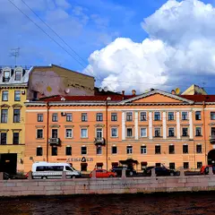
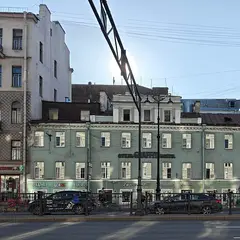
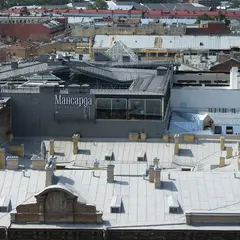
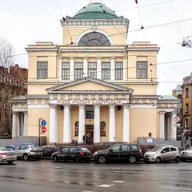
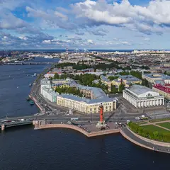
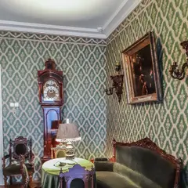

Места по типу · данные на 26 ноября
Рестораны Петербурга: где поужинать
В каталоге 79 ресторанов и кафе: 27 недорогих (примерно до 1 500 ₽ на человека) и 21 — для особого случая. 50 мест в центре, остальные — по 5 районам Петербурга и пригородов. Для многих есть готовые планы: прогулка до ужина или бар после.
- 79 мест
- 107 планов
- 6 районов
Рестораны 40 из 79
Фурштатская ул., 42
Новое
Кафе, интерьер которого тридцать лет собирали из картин, витражей, самоваров и винила; вечерами играют джаз и блюз. Есть что разглядывать вдвоём.
Подробнее и маршрут: СундукПозвать сюда: Сундук
Фото здания: Анастасия Юрьевна Львова, CC BY-SA 4.0 · Wikimedia Commons

наб. реки Фонтанки, 30
Свежая паста и бар на Фонтанке — лёгкий итальянский ужин вдвоём без лишней торжественности.
Подробнее и маршрут: Salone Pasta&BarПозвать сюда: Salone Pasta&Bar
Фото здания: GAlexandrova, CC BY-SA 4.0 · Wikimedia Commons

Лиговский пр., 33-35
Новое
Дневное бистро с карибской кухней: джерк, бокиты и бульон с бесплатным доливом. Вход ведёт в тематический пиратский комплекс.
Подробнее и маршрут: Курочка по-карибскиПозвать сюда: Курочка по-карибски
Фото здания: Анастасия Юрьевна Львова, CC BY-SA 4.0 · Wikimedia Commons
наб. реки Мойки, 22
Ресторан на верхнем этаже отеля у Дворцовой: панорама крыш и соборов, сезонная кухня.
Подробнее и маршрут: BellevueПозвать сюда: Bellevue
Фото: Moneycantbuy, CC BY-SA 4.0 · Wikimedia Commons
Караванная ул., 8
Демократичное кафе с домашней кухней: хинкали, хачапури-фокачча, сытные салаты — под большую компанию.
Подробнее и маршрут: Мама ТатаПозвать сюда: Мама Тата
Фото здания: Анастасия Юрьевна Львова, CC BY-SA 4.0 · Wikimedia Commons
ул. Марата, 11
Ресторан при отеле «Гельвеция»: русско-итальянское меню и тихий красивый двор для неспешного ужина.
Подробнее и маршрут: Café ClaretПозвать сюда: Café Claret
Фото здания: GAlexandrova, CC BY-SA 4.0 · Wikimedia Commons

Почтамтская ул., 3-5
Ресторан под крышей с огромными окнами: купол Исаакия почти рукой подать — выбор для важного вечера.
Подробнее и маршрут: МансардаПозвать сюда: Мансарда
Фото: Vadim Indeikin, CC BY-SA 3.0 · Wikimedia Commons
Колокольная ул., 1
Новое
Щичная в духе японской раменной: пять видов щей, свои соленья и квашеная капуста, русская кухня без музейности.
ул. Решетникова, 12
Гастрорынок у Московских ворот: ресторанные корнеры и регулярные фестивали кухни и культуры.
Подробнее и маршрут: Московский рынокПозвать сюда: Московский рынок
Фото: Анастасия Юрьевна Львова, CC BY-SA 4.0 · Wikimedia Commons
наб. канала Грибоедова, 56-58
Новое
Пышечная у канала в центре. Можно взять пакет пышек и пройтись вдоль воды.
наб. Адмиралтейского канала, 2М
Ресторан в старой кузнице Новой Голландии: ужин, а позже диджеи; легко совместить с прогулкой по острову.
наб. Лейтенанта Шмидта, 27/2
Новое
Пышечная на Васильевском у набережной, недорого. Можно согреться пышками и кофе перед прогулкой по Неве.
Подробнее и маршрут: Монастырские пышкиПозвать сюда: Монастырские пышки
Гороховая ул., 16/71
Новое
Пышечная в центре с доступными ценами. Подойдёт, чтобы перехватить сладкого с друзьями на ходу.
Большая Морская ул., 3-5
Новое
Пышечная в двух шагах от Дворцовой, открыта до позднего вечера. Удобно заглянуть после вечерней прогулки.
Подробнее и маршрут: Пышки на Большой МорскойПозвать сюда: Пышки на Большой Морской
9-я линия В.О., 18
Новое
Пышечная на Васильевском острове с низкими ценами. Хороша для утреннего кофе с пышками перед прогулкой по линиям.
Подробнее и маршрут: Пышки на ВаськеПозвать сюда: Пышки на Ваське
ул. Некрасова, 26
Бар-рюмочная, задавшая моду на новые рюмочные: бутерброд с килькой, чача и шумная творческая публика.
Большая Зеленина ул., 6
Новое
Новый японский ресторан с грилем, азиатскими коктейлями и кальяном; размеренный ужин вдвоём или с подругами.
Кирочная ул., 8Б
Маленький гастробар, с которого началась новая ресторанная волна города: севиче, бычьи хвосты, терраса у кирхи.
Подробнее и маршрут: Duo GastrobarПозвать сюда: Duo Gastrobar
ул. Восстания, 16
Камерное итальянское бистро у площади Восстания — частый совет для первого свидания.
Подробнее и маршрут: Giallo BistroПозвать сюда: Giallo Bistro
наб. Адмирала Лазарева, 22
Новое
Японский ресторан с авторскими коктейлями на дорогом алкоголе и закусками вроде хэнд-роллов. Подходит для неспешного красивого вечера вдвоём.
Конюшенная пл., 2Г
Новое
Дорогой ресторан с обновлённым меню: редкая рыба из Азии, сырая дорада с соусами, авторские коктейли и французский десерт. Подойдёт для торжественного ужина вдвоём.
Большая Морская ул., 45
Уютное кафе-квартира с диванами и пледами у Исаакия: понятная еда и демократичные цены.
Казанская ул., 3
Ресторан на крыше у Казанского собора: летом открытая терраса с видом на купола и Дом Зингера.
Дегтярная ул., 1А
Свежий взгляд на русскую кухню: домашние заготовки, пироги и шашлык с необычными соусами.
ул. Рубинштейна, 40/11
Круглосуточно
Фалафель и шаварма в пите на Рубинштейна — сытный недорогой перекус до баров или после них.
Большой пр. В.О., 16/14Б
Обновлённый исторический рынок: фермерские прилавки и много корнеров с едой — каждый выберет своё.
Подробнее и маршрут: Василеостровский рынокПозвать сюда: Василеостровский рынок
наб. реки Мойки, 84
Ужин-сет из многих перемен на Мойке: французская основа и северные продукты — гастросвидание.
Каменноостровский пр., 10
Новый авторский ресторан на Петроградке, сразу попавший в финал городской премии 2026.
Невский пр., 47
Ресторан с дореволюционной историей на углу Невского: русская и французская классика в парадных залах.
Садовая ул., 32/1
Новое
Простая пышечная у Апраксина двора. Недорогой сладкий привал во время прогулки по центру.
Подробнее и маршрут: Пышечная на СадовойПозвать сюда: Пышечная на Садовой
Малая Садовая ул., 1/25
Новое
Небольшая пышечная в самом центре у Невского. Дешёвый перекус посреди прогулки по городу.
Подробнее и маршрут: Пышки из детстваПозвать сюда: Пышки из детства
3-я линия В.О., 6
Французская брассери на Васильевском: классика на каждый день; среди лучших новинок 2026.
Подробнее и маршрут: Brasserie by AcademiaПозвать сюда: Brasserie by Academia
Большая Конюшенная ул., 9
Азиатское бистро с десятилетней историей и зелёным залом у Невского; по будням недорогие ланчи.
ул. Рубинштейна, 20
Азия от команды Duo: яркие севиче, лапша и сильные десерты — хорошая точка перед барами Рубинштейна.
Лиговский пр., 30
Фудхолл на 5-м этаже «Галереи»: десятки кухонь мира в одном зале и сезонные фуд-фестивали.
Малая Морская ул., 24
Парижская брассери в «Англетере»: завтраки, пиано-бар и свой кинозал — почти готовое свидание.
пр. Чернышевского, 3Б
Кавказская кухня от домашнего мастера: аккуратные хинкали, хачапури и мцвади с углей.
Зоологический пер., 2-4
Итальянская классика у Зоопарка от Арама Мнацаканова: пицца, паста, вино; любимец гастрономов.
Провиантская ул., 3
Баскская кухня на Петроградке: стейк с перечным соусом, паэлья и винтажная мебель; финалист премии 2026.
Подробнее и маршрут: Баски & МонегаскиПозвать сюда: Баски & Монегаски
наб. Чёрной речки, 2
Новое
Кафе с блинами и пышками на Чёрной речке. Недорогой и уютный перекус для двоих.
Подробнее и маршрут: Блины да пышкиПозвать сюда: Блины да пышки


Готовые планы с этими местами 12 из 107

- Музей Арктики и Антарктики · Музей · м. Владимирская
- 5 минут пешкомБа · Ресторан русской кухни
- 1 минута пешкомRing o'Bells · Паб
Полярные экспедиции в музее, потом сытные щи в пяти минутах и пинта в пабе буквально через дорогу.
Открыть план: Арктика, щи и пабПозвать сюда: Арктика, щи и паб
Фото: Виктор Лимаренко, CC BY-SA 4.0 · Wikimedia Commons
- Арт-центр «Пушкинская-10» · Арт-центр · м. Площадь Восстания
- 7 минут пешкомКурочка по-карибски · Бистро
Бродите по галереям и дворам арт-центра, а через пять минут обедаете карибской едой в пиратских декорациях.
Открыть план: Арт-центр и карибский обедПозвать сюда: Арт-центр и карибский обед
Фото здания: Анастасия Юрьевна Львова, CC BY-SA 4.0 · Wikimedia Commons
- Театр Академии танца Бориса Эйфмана · Театр балета · м. Чкаловская
- 7 минут пешкомDOJO · Ресторан
Спектакль в театре Академии Эйфмана, затем пять минут пешком до DOJO — гриль и азиатские коктейли.
Открыть план: Балет и японский ужинПозвать сюда: Балет и японский ужин
Фото: Viktorinkalexeeva, CC BY-SA 4.0 · Wikimedia Commons

- Центр искусства и науки ИТМО · Галерея · м. Спортивная
- 12 минут пешкомСтрелка Васильевского острова · Набережная
- 20 минут пешкомBrasserie by Academia · Брассери
После небольшой выставки идёте минут десять к Стрелке смотреть на Неву на закате, а ужинаете в брассери неподалёку.
Открыть план: Выставка и Стрелка ВасильевскогоПозвать сюда: Выставка и Стрелка Васильевского
Фото: A.Savin, Free Art License · Wikimedia Commons
- Дворцовая площадь · Площадь · м. Адмиралтейская
- 4 минуты пешкомПышки на Большой Морской · Пышечная
Вечерняя прогулка по Дворцовой площади, а через три минуты — пышки, которые продают до 23:00.
Открыть план: Дворцовая и пышкиПозвать сюда: Дворцовая и пышки
Фото: Godot13, CC BY-SA 4.0 · Wikimedia Commons
- Музей Довлатова · Музей · м. Достоевская
- 7 минут пешкомБа · Ресторан русской кухни
- 1 минута пешкомEl Copitas · Коктейльный бар
Короткий музей Довлатова, ужин в щичной в пяти минутах ходьбы и коктейль в соседнем баре напоследок.
Открыть план: Довлатов, щи и коктейльПозвать сюда: Довлатов, щи и коктейль
Фото: Kommunalka1912, CC BY-SA 4.0 · Wikimedia Commons

- Литературно-мемориальный музей Достоевского · Музей · м. Владимирская
- 3 минуты пешкомБа · Ресторан русской кухни
Квартира Достоевского в двух минутах от щичной: после музея — горячие щи и соленья, очень петербургский осенний вечер.
Открыть план: Достоевский и тарелка щейПозвать сюда: Достоевский и тарелка щей
Фото: Александровы АГ, CC BY-SA 4.0 · Wikimedia Commons
- КиберПрайд · Компьютерный клуб · м. Площадь Восстания
- 5 минут пешкомКурочка по-карибски · Бистро
Пара часов в компьютерном клубе, потом пять минут пешком до бистро с острой курицей джерк, чтобы плотно поесть.
Открыть план: Катки и карибская курицаПозвать сюда: Катки и карибская курица
Фото здания: Анастасия Юрьевна Львова, CC BY-SA 4.0 · Wikimedia Commons
- Взаперти на Казанской · Квест · м. Невский проспект
- 7 минут пешкомПышечка · Пышечная
Выбраться из квеста на Казанской и через пять минут отметить победу пышками на Гороховой.
Открыть план: Квест и пышкиПозвать сюда: Квест и пышки
Фото: Vladimir Ivanov, общественное достояние · Wikimedia Commons
- Анненкирхе · Арт-пространство · м. Чернышевская
- 9 минут пешкомСундук · Арт-кафе
Смотрите выставку в старой кирхе и за семь минут доходите до кафе, где каждая стена — отдельная коллекция. Два необычных интерьера подряд.
Открыть план: Кирха и кафе-кунсткамераПозвать сюда: Кирха и кафе-кунсткамера
Фото: Екатерина Борисова, CC BY-SA 4.0 · Wikimedia Commons
- Ледокол «Красин» · Музей-корабль · м. Горный институт
- 13 минут пешкомМонастырские пышки · Пышечная
Осмотреть ледокол «Красин» у набережной, а через десять минут вдоль Невы согреться пышками и кофе.
Открыть план: Ледокол и пышкиПозвать сюда: Ледокол и пышки
Фото: Andrey Korchagin, CC BY-SA 2.0 · Wikimedia Commons
- Парадная с ротондой (дом Яковлева) · Парадная с ротондой · м. Сенная площадь
- 6 минут пешкомПышечная на Садовой · Пышечная
Заглянуть в парадную с ротондой на Гороховой, а через пять минут пешком согреться пышками у Апраксина двора.
Открыть план: Ротонда и пышкиПозвать сюда: Ротонда и пышки
Фото: Artyom Svetlov, CC BY-SA 4.0 · Wikimedia Commons


Как позвать
- Выбери план, место или событие — в карточке адрес, цены и маршрут в Яндекс Картах.
- Нажми «Позвать сюда» — соберётся приглашение-игра для свидания или голосование для компании.
- Отправь ссылку в любой мессенджер: тебе ответят, а компания отметит, куда и когда может. Бесплатно и без регистрации.